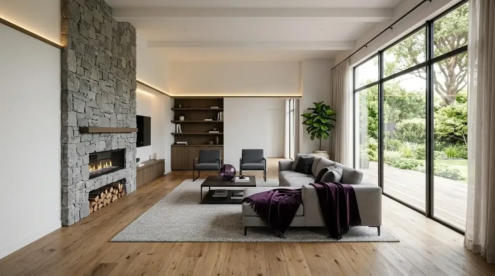

Mengapa Evaluasi Review Jasa Bangun Rumah Minimalis Sangat Krusial?
Jawaban Langsung: Evaluasi ulasan krusial dilakukan untuk menghindari pembengkakan biaya, ketidaksesuaian spesifikasi material, serta keterlambatan pengerjaan melalui pembuktian rekam jejak penyedia jasa.
Membaca dan menganalisis ulasan pengerjaan proyek rumah minimalis merupakan langkah mitigasi risiko terpenting sebelum mentransfer dana deposit. Rumah minimalis tampak sederhana dari luar, namun membutuhkan kepresisian tinggi pada pertemuan garis struktur, kerapian sudut dinding, serta integrasi pencahayaan dan sirkulasi udara. Kesalahan dalam memilih vendor dapat berakibat fatal pada pembengkakan biaya hingga keretakan struktur di kemudian hari.
Berdasarkan laporan survei Indeks Kepuasan Konsumen Sektor Konstruksi Hunian oleh Lembaga Penyelidikan Ekonomi dan Masyarakat (LPEM) periode 2024–2025, sebanyak 42% keluhan pemilik rumah baru bersumber dari ketidaksesuaian spesifikasi material antara perjanjian awal dengan realisasi di lapangan. Data tersebut diperkuat oleh publikasi Asosiasi Pengembang Perumahan dan Permukiman Seluruh Indonesia (APERSI) tahun 2025 yang mencatat bahwa keterlambatan penyelesaian proyek rata-rata mencapai 2 hingga 4 bulan apabila kontraktor tidak memiliki sistem manajemen proyek yang terintegrasi.
- Transparansi Analisa Harga Satuan (AHSP): Memiliki rincian biaya material dan tenaga kerja terperinci per satuan m² atau m³.
- Ketersediaan Site Visit: Berani menunjukkan proyek yang sedang berjalan (on-progress) untuk ditinjau langsung.
- Sistem Kontrak Tertulis Lengkap: Melampirkan time schedule, kurva-S, dan ketentuan adendum jelas.
- Garansi Struktur Resmi: Memberikan jaminan tertulis purna-jual terhadap kekuatan fondasi dan kebocoran.
Parameter Utama Apa yang Harus Dicek Saat Membaca Testimoni Jasa Bangun Rumah?
Jawaban Langsung: Parameter utama yang harus dicek meliputi transparansi rincian RAB, kerapian hasil finishing detail, ketepatan waktu penyerahan unit, serta komitmen garansi.
Saat menelaah ulasan dari konsumen sebelumnya, Anda tidak boleh hanya berpatokan pada rating bintang lima secara umum. Ada elemen-elemen teknis yang mencerminkan profesionalisme kerja penyedia jasa konstruksi:
- Transparansi Rencana Anggaran Biaya (RAB): Pastikan ulasan mengonfirmasi bahwa tidak ada biaya siluman (hidden fee) di tengah proses pembangunan.
- Kerapian Detail Finishing: Rumah minimalis sangat menonjolkan estetika permukaan. Perhatikan ulasan terkait kerapian nat keramik, kerapian acian dinding, dan presisi kusen aluminium.
- Kepatuhan Terhadap Timeline: Ulasan yang baik akan menyebutkan bahwa penyerahan kunci dilakukan sesuai atau bahkan lebih cepat dari jadwal kontrak.
- Respon Terhadap Komplain: Ketahui bagaimana respons penyedia jasa ketika ditemukan cacat pengerjaan (defect) pada masa pemeliharaan.
Dengan membedah ulasan secara kritis, Anda dapat membedakan antara testimoni rekayasa dengan ulasan otentik dari pemilik rumah yang puas.

Pengerjaan interior open-concept living room dengan pencahayaan tersembunyi dan material presisi dari portofolio resmi Kontraktor Bangunan.
Bagaimana Cara Memverifikasi Portofolio Kontraktor Rumah Minimalis?
Jawaban Langsung: Verifikasi portofolio dilakukan dengan membandingkan render 3D terhadap hasil fisik, melakukan site visit proyek berjalan, serta memeriksa detail spesifikasi teknis material.
Portofolio adalah cermin kompetensi teknis dari tim arsitek dan tenaga ahli di lapangan. Menguji portofolio secara objektif meminimalkan risiko ketidaksesuaian desain 3D dengan hasil jadi fisik di lapangan:
1. Konsistensi Desain
Bandingkan antara render visual rancangan arsitek dengan foto fisik as-built drawing setelah proyek selesai untuk memastikan akurasi cantilever dan sudut fasad.
2. Kunjungan Proyek (Site Visit)
Penyedia jasa terpercaya mengundang Anda meninjau proyek berjalan untuk menilai langsung kedisiplinan K3, kerapian pengerjaan, dan kebersihan lokasi kerja.
3. Spesifikasi Teknis
Pastikan portofolio mencantumkan mutu beton (K-250/K-300), besi ulir SNI, merek cat exterior anti-flaking, hingga spesifikasi instalasi perpipaan terpasang.
Mengapa Kontraktor Bangunan Menjadi Pilihan Utama Hunian Minimalis?
Jawaban Langsung: Kontraktor bangunan unggul karena menerapkan transparansi RAB penuh, manajemen pengerjaan tepat waktu, spesifikasi material terstandarisasi, serta jaminan garansi tertulis.
Memilih mitra konstruksi tidak sekadar mencari penyedia tukang, melainkan menemukan partner strategis yang dapat mengelola aset investasi Anda. Kontraktor Bangunan menghadirkan pendekatan terpadu yang menggabungkan estetika arsitektur modern, kekuatan struktur teruji, serta efisiensi anggaran secara transparan.
Seluruh proses kerja di Kontraktor Bangunan didukung oleh sistem manajemen mutu terpantau secara berkala, memastikan setiap tahap pembangunan tercatat rapi dan dapat diakses oleh pemilik proyek. Dapatkan layanan konsultasi mendalam dan analisis tata letak awal secara cuma-cuma melalui Konsultasi Gratis via WA dari tim spesialis kami.
Perbandingan Spesifikasi Layanan Jasa Bangun Rumah Baru
Jawaban Langsung: Standar Kontraktor Bangunan menawarkan kepastian hukum, pengawasan profesional terstruktur, akurasi RAB tanpa biaya tersembunyi, serta garansi pemeliharaan tertulis yang kuat.
Untuk memudahkan pertimbangan Anda dalam memilih standar pengerjaan hunian minimalis berkualitas, berikut tabel komparasi antara standar pengerjaan konvensional dengan standar unggulan dari Kontraktor Bangunan:
| Parameter Evaluasi | Kontraktor Konvensional / Perorangan | Standar Unggulan (Kontraktor Bangunan) |
|---|---|---|
| Penyusunan RAB | Estimasi kasar / Lump sum tanpa rincian merk | Rincian detail item, spesifikasi, merk, & harga satuan |
| Pengawasan Proyek | Insidental / Tidak ada supervisor tetap | Site Engineer dedicated & laporan mingguan digital |
| Garansi Pemeliharaan | Lisan (Rata-rata 1–2 minggu) | Garansi Struktur s/d 1 Tahun & Garansi Finishing Tertulis |
| Spesifikasi Struktur | Sering disesuaikan di lapangan tanpa persetujuan | Sesuai perhitungan teknis Structural Engineer & SNI |
| Manajemen Perubahan (Addendum) | Sebagian besar memicu lonjakan harga tak terukur | Prosedur Addendum transparan dengan kesepakatan tertulis |
| Legalitas Kontrak | Nota sederhana / Kwitansi | Kontrak hukum resmi bermaterai dengan adendum jelas |
Hal Teknis Apa Saja yang Wajib Tertera dalam Kontrak Pengerjaan?
Jawaban Langsung: Kontrak wajib memuat rincian time schedule, skema pembayaran berbasis progres fisik, pasal denda keterlambatan, spesifikasi material melampirkan RAB, serta garansi pemeliharaan.
Kontrak kerja konstruksi adalah benteng perlindungan utama bagi pemilik rumah. Sebelum menandatangani dokumen kesepakatan, pastikan pasal-pasal kunci berikut telah tercantum secara eksplisit:
- Rincian Time Schedule & S-Curve: Kurva jadwal pengerjaan yang menjadi acuan persentase kelayakan pencapaian target bulanan.
- Skema Pembayaran Berbasis Termyn: Pembayaran dikaitkan langsung dengan prestasi fisik di lapangan yang disetujui bersama, bukan berdasarkan urutan tanggal.
- Pasal Denda Keterlambatan (Penalty): Keterangan kompensasi finansial jika terjadi kelalaian durasi waktu pengerjaan di luar kondisi force majeure.
- Masa Pemeliharaan (Retention Period): Penahanan sebagian kecil dana (biasanya 5%) hingga masa garansi pemeliharaan selesai untuk memastikan seluruh cacat fungsi telah diperbaiki.
Pengikatan kontrak yang komprehensif menjamin bahwa proses pembangunan hunian berjalan tenang, aman, dan dapat dipertanggungjawabkan dari awal hingga penyerahan kunci.
Pertanyaan yang Sering Diajukan (FAQ)
Kesimpulan Praktis
Membaca ulasan dan melakukan evaluasi kritis terhadap penyedia jasa bangun rumah minimalis adalah kunci utama kesuksesan pengerjaan hunian baru Anda. Dengan memperhatikan transparansi RAB, validitas portofolio, legalitas perjanjian, dan jaminan garansi, Anda terhindar dari risiko kerugian finansial dan kekecewaan kualitas bangunan.
Wujudkan hunian minimalis impian Anda yang kokoh, estetis, dan tepat anggaran bersama tim profesional berpengalaman. Ambil langkah pertama sekarang juga melalui layanan Konsultasi Gratis via WA dari Kontraktor Bangunan untuk mendapatkan analisis tata letak dan estimasi biaya terbaik!